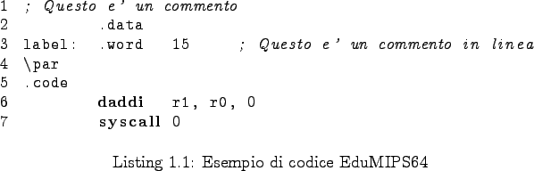

Next: La sezione .data Up: Formato dei file sorgenti Previous: Formato dei file sorgenti Indice Indice analitico
Per distinguere le varie parti di ciascuna linea di codice, può essere utilizzata una qualunque combinazione di spazi e tabulazioni.

I commenti possono essere introdotti utilizzando il carattere ``;'' qualsiasi cosa venga scritta successivamente ad esso verrà ignorata. Un commento può quindi essere usato ``inline'' (dopo una direttiva) oppure in una riga a sè stante.
Le etichette possono essere usate nel codice per fare riferimento ad una cella di memoria o ad un'istruzione. Esse sono case insensitive. Per ciascuna linea di codice può essere utilizzata un'unica etichetta. Quest'ultima può essere inserita una o più righe al di sopra dell'effettiva dichiarazione del dato o dell'istruzione, facendo in modo che non ci sia nulla, eccetto commenti e linee vuote, tra l'etichetta stessa e la dichiarazione.